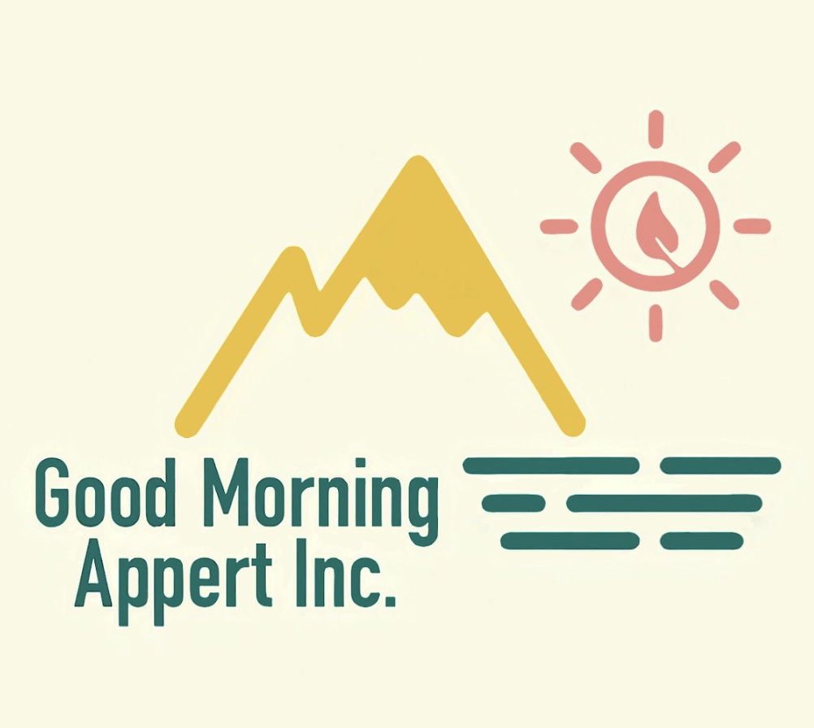
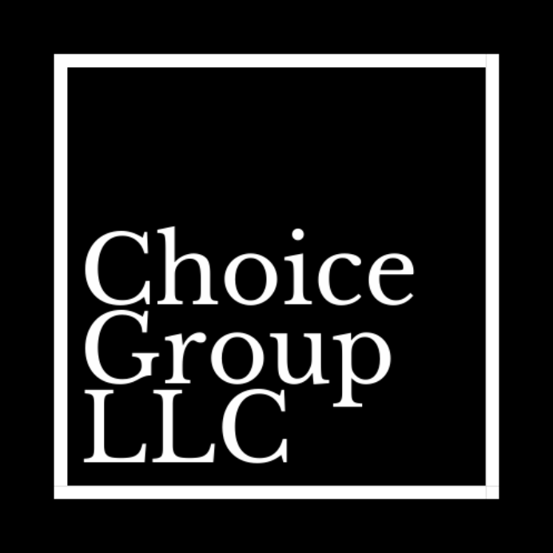
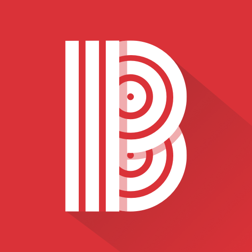
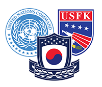

Current & Past
Fully-cooked Foods in Room Temperature?
Appert is an innovative food-tech startup based in the Bay Area, established as a California company in April 2020. Led by a team of UC Berkeley colleagues from South Korea, Appert has formed a joint venture with ACHIM Co. Ltd, a renowned food innovation company in South Korea. Named after the father of canning, Appert has introduced Achim’s groundbreaking technology in food preservation and sterilization, allowing fresh, cooked food to be preserved without chemicals for up to 6 months at room temperature, potentially revolutionizing the food industry's current canning systems.
Appert, in partnership with ACHIM, has introduced "RTF" (Room-Temperature-Fresh) foods, utilizing a patented high-temperature pressure sterilization process. This method ensures the longevity and safety of food products, which are then packaged in innovative, recyclable retort pouches, a first in the industry to allow visibility and recyclability. These pouches are a significant step forward from traditional metal-based retort packaging, offering environmental benefits and enhancing consumer trust.
With a majority stake in the joint venture and rights to the processing and packaging patent in the US, Canada, and Mexico, Appert is at the forefront of the RTF food category, committed to delivering quality, convenience, and sustainability. As we continue to expand our reach and innovate, Appert is dedicated to redefining the future of food storage and consumption.
Taking the Covid-19 Pandemic into My Own Hands
Choice Group is a California-based company with sales and distribution rights to a network of FDA-approved South Korean medical equipment manufacturers. It is founded to provide a quicker and more reliable supply of tests, masks, and other critical equipment/devices in the emergence of the coronavirus pandemic and has built a strong background in developing public-private partnerships, arranging international shipping logistics and fulfilling healthcare manufacturing contracts, contributing in numerous United States local and federal level governments and agencies’ deals.
View More InfoOrchestrating Blind's U.S. Market expansion
Blind is a trusted community where verified professionals connect to discuss what matters most. Professionals anonymously communicate in private company channels and openly with users across industries. Blind is a place where 9M professionals worldwide share advice, provide honest feedback, improve company culture and discover relevant career information.
Blind is a platform for change. Our mission towards transparency breaks down professional barriers - empowering informed decisions and inspiring productive change in the workplace.
Injecting Democratic Content into North Korea
NetFreedom Pioneers’ vision is of a fully connected world with unhindered access to educative and empowering digital resources including online social communities, educational resources, supportive advocacy content, news and current events, and other media.
To this end NFP develops and employs innovative satellite, internet, and mobile technologies that can overcome the largest digital barriers to empowering and educating people around the globe.
Protecting the U.S. & South Korea Alliance
The United States Forces Korea (USFK) is the joint headquarters for U.S. combat-ready fighting forces and components under the ROK/US Combined Forces Command (CFC) – a supreme command for all of the South Korean and U.S. ground, air, sea and special operations component commands. Major USFK elements include U.S. Eighth Army (EUSA), U.S. Air Forces Korea (Seventh Air Force), U.S. Naval Forces Korea (CNFK), U.S. Marine Forces Korea (MARFORK) and U.S. Special Operations Command Korea (SOCKOR). It was established on July 1, 1957.
Its mission is to support the United Nations Command (UNC) and Combined Forces Command by coordinating and planning among U.S. component commands, and exercise operational control of U.S. forces as directed by United States Indo-Pacific Command.
USFK has Title 10 authority, which means that USFK is responsible for organizing, training and equipping U.S. forces on the Korean Peninsula so that forces are agile, adaptable and ready.
While USFK is a separate organization from United Nations Command (UNC) and ROK/US Combined Forces Command (CFC), its mission is to support both UNC and CFC by coordinating and planning among US component commands and providing US supporting forces to the CFC. As such, USFK continues to support the ROK-US Mutual Defense Treaty.
Running Around School
The Associated Students of the University of California (ASUC) is the autonomous and officially recognized students' association of the University of California, Berkeley. It is the only students' association within the University of California that is fully autonomous from the university administration. Founded in 1887, the ASUC is an independent, 501(c)(3) non-profit, and unincorporated association. The ASUC controls funding for all ASUC-sponsored organizations, advocates on behalf of students to solve issues on campus and in the community, engages with administrators to develop programming, increase student-organizational resources, and increase transparency.
The ASUC Constitution establishes a students' association with elected officials modeled after California's separation-of-powers and plural elected executive framework. The executive officers and the Senate of the ASUC are popularly elected by single transferable vote. Chief Appointed Officers are non-partisan officials appointed by the Senate. The ASUC's responsibilities include allocating student group funding through a yearly spring budgeting process. The ASUC budgets in excess of $2 million each year to campus organizations, including the Bridges multicultural resource & retention center.